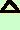

esercizio
Mostrare la presenza della struttura ad anello per l'insieme
P(A) insieme potenza dell'insieme A con le
operazioni di differenza simmetrica  ed
intersezione 
Per ripassare l'insieme P(A)
la differenza simmetrica
l'intersezione
Dimostrazione:
dovremo mostrare:
- la presenza di un gruppo commutativo con la prima operazione
- la presenza di un semigruppo con la seconda operazione
- il fatto che la seconda operazione e' distributiva rispetto alla prima
Cominciamo dal primo punto
- Mostriamo che ( P(A),) e' un gruppo;
devono valere le
proprieta':
- e' interna:
avremo sempre che la differenza simmetrica di due elementi di P(A) e'
sempre ancora un elemento di P(A)
Infatti P(A) e' costituito da tutti i sottoinsiemi di
A cioe' gli insiemi che posso costruire con gli elementi di A,
insieme vuoto compreso, quindi se da due sottoinsiemi tolgo alcuni elementi
dell'insieme A avremo ancora un sottoinsieme di A
- e' associativa,
infatti chiamati A1, A2 e
A3
tre elementi di P(A) abbiamo:
(A1 A2) A3 =
A1 (
A2 A3)
Infatti siccome la differenza simmetrica toglie elementi da entrambe gli
insiemi che coinvolge, sia che li tolga prima o dopo, quando coinvolge gli
stessi insiemi da' sempre lo stesso risultato
mostriamolo anche su un esempio
pratico:
Considero l'insieme A = { Ø, 1, 2, 3, 4 }
Allora l'insieme potenza e' l'insieme composto dagli elementi
{ Ø }
{ 1 }
{ 2 }
{ 3 }
{ 4 }
{ 1, 2 }
{ 1 3 }
{ 1 4 }
{ 2, 3 }
{ 2, 4 }
{ 3, 4 }
{ 1, 2, 3 }
{ 1, 2, 4 }
{ 1, 3, 4 }
{ 2, 3, 4 }
{ 1, 2, 3, 4 }
Consideriamo:
A1 = { 1, 2, 4 }
A2 = { 1, 3, 4 }
A3 = { 1, 4 }
(A1 A2) A3 =
A1 (
A2 A3)
per mostrarlo facciamo i calcoli prima e dopo l'uguale e mostriamo che i
risultati sono uguali:
({ 1, 2, 4 } { 1, 3, 4 })
{ 1, 4 }
= { 3 } { 1, 4 }
= { 1, 3, 4 }
{ 1, 2, 4 } ( { 1, 3, 4
}
{ 1, 4 })
= { 1, 2, 4 } { 3 }
= { 1, 3, 4 }
- + possiede l'elemento neutro: infatti esiste l'elemento
Ø, cioe' il sottoinsieme vuoto e la differenza simmetrica fra
l'insieme vuoto e qualsiasi sottoinsieme e' sempre lo stesso sottoinsieme
AnØ = Ø An =
An
- ogni elemento An di P(A) possiede in
l'elemento
simmetrico: basta considerare l'insieme complementare di An
rispetto ad A perche' la differenza simmetrica dia come risultato
l'insieme vuoto
se ad esempio considero l'insieme { 1, 2 } il suo
complementare rispetto ad A sara { 3, 4 } e facendo
la differenza complementare avremo che spariscono tutti gli elementi e resta
il vuoto
{ 1, 2 } { 3, 4 } =
{ 3, 4 } { 1, 2
} = Ø
Quindi ( P(a), ) e' un
gruppo; la commutativita' deriva dal fatto che l'operazione restituisce
gli elementi non comuni fra due insiemi, quindi e' indifferente l'ordine
in cui li considero
Mostriamo che ( P(A), ) e' un semigruppo
- Basta mostrare che e' associativa, cioe' chiamati
A1, A2 e A3
tre elementi di P(x) abbiamosempre:
(A1 A2) A3 = A1
(A2 A3)
Infatti, poiche' l'operazione intersezione fr insiemi restituisce gli elementi
che gli insiemi hanno in comune, in qualunque ordine considereremo i 3 insiemi
avremo sempre lo stesso risultato (cioe' gli elementi comuni ai 3 insiemi)
- Mostriamo infine che la seconda operazione e' distributiva
rispetto alla prima, cioe' dati A1, A2 e
A3
appartenenti a
P(A) avremo sempre
A1 (A2 A3] =
A1
A2 A1 A3
(A2 A3] A1 = A2
A1 A3 A1
Questo e' un po' difficile da dimostrare: limitiamoci amostrare che e' vero su
un esempio
Consideriamo i tre insiemi
A1 = { 1, 2, 4 }
A2 = { 1, 3, 4 }
A3 = { 2, 4 }
mostriamo che, nella prima uguaglianza sono uguali i risultati sviluppando
prima dell'uguale e dopo l'uguale
Prima dell'uguale:
{ 1, 2, 4 } ({ 1, 3, 4 } { 2, 4 })
= { 1, 2, 4 }
{ 1, 2, 3 } = { 1, 2 }
dopo l'uguale
{ 1, 2, 4 } { 1, 3, 4 } { 1, 2, 4 }
{ 2, 4 } =
{ 1, 4 } { 2, 4 }
{ 1, 2 }
Quindi la struttura ( P(A), , ) e' un
anello
Siccome l'operazione in P(A) e' commutativa
avremo che l'anello e'
commutativo
Poiche' l'intersezione in A ha come elemento neutro
l' insieme A stesso e tale elemento e' definito in modo univoco allora
posso
parlare di un solo elemento neutro e l'anello e' unitario
|